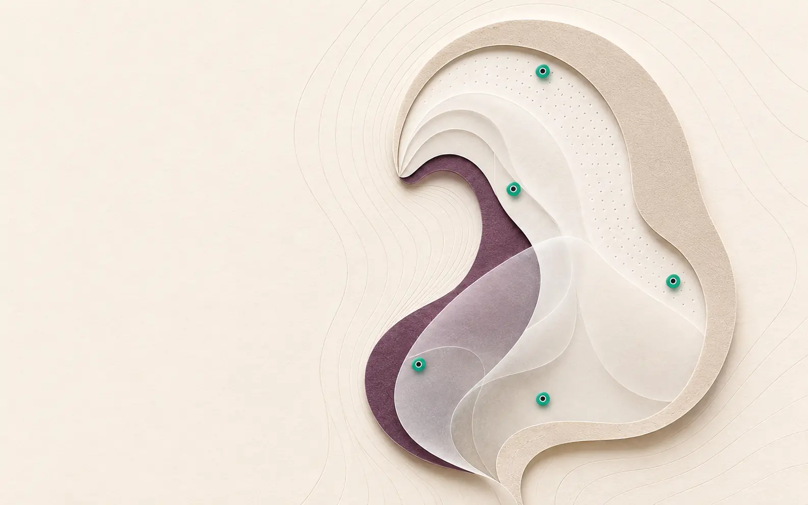

Authorised translation · Consumer wellbeing
From clinical-origin science to everyday wellbeing.
WinVerse™ is advancing facial-stimulation technology originating at UHN/KITE through an authorised commercialisation pathway. SerotoniX™ is being developed first for consumer wellbeing—short, guided facial-activation and relaxation routines without medical claims—while research teams at UHN/KITE continue the scientific programme.
Technology originUHN/KITE-origin research
First marketConsumer wellbeing · B2C
Claim boundaryNo diagnosis or treatment claims
